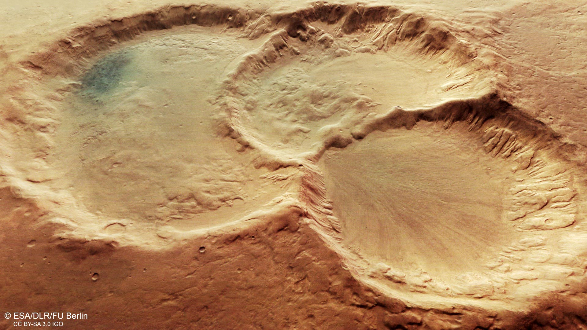
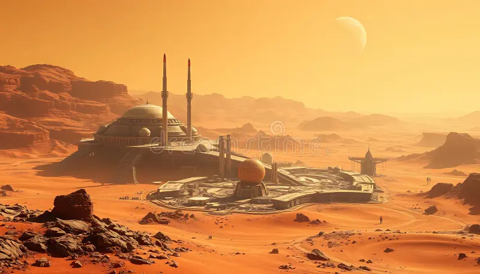

Behold the rugged terrain of Mars — a place where dust devils swirl and the silence of space echoes across the red rocks.

The Mars Rover, humanity's mechanical pioneer, scanning the surface for signs of life and stories hidden in the soil.
A Martian sunset — colder, bluer, quieter than anything Earth could imagine, yet stunning in its alien beauty.

Impact craters tell the history of Mars’ violent past. Each scar a chapter of cosmic chaos and creation.

Concepts of future colonization spark the imagination — humans building homes where no life has ever lived.
An astronaut stands alone — not in solitude, but in triumph, carrying the dreams of Earth into the Martian dawn.